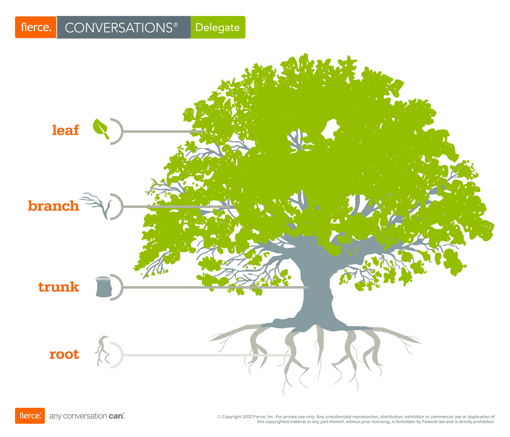
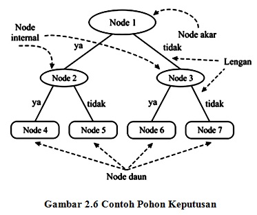
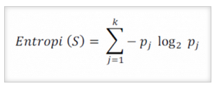

DECITION TREE
Decition Tree (Pohon Keputusan)¶

Setiap orang tentu menginginkan sebuah pengambilan keputusan yang tepat dan efisien tak terkecuali sebuahperusahaan. Untuk itu banyak sekali perusahaan yang membutuhkan suatu media seperti Business Intelligence guna membantu dalam pengambilan keputusan yang tepat.
Decition tree adalah salah satu metode klasifikasi yang paling popular, karena mudah untuk diinterpretasikan oleh manusia. Decition tree adalah model prediksi menggunakan struktur pohon atau struktur berhirarki. Konsep dari pohon keputusan adalah mengubah data menjadi decition tree dan aturan-aturan keputusan. Nama lain dari decition tree adalah CART (Classification and Regression Tree). Dimana metode ini merupakan gabungan dari dua jenis pohon, yaitu classification tree dan juga regression tree.
Manfaat utama dari penggunaan pohon keputusan adalah kemampuannya untuk mem-break down proses pengambilan keputusan yang kompleks menjadi lebih simpel sehingga pengambil keputusan akan lebih menginterpretasikan solusi dari permasalahan. Pohon keputusan memadukan antara eksplorasi data dan pemodelan, sehingga sangat bagus sebagai langkah awal dalam proses pemodelan bahkan ketika dijadikan sebagai model akhir dari beberapa teknik lain. Sering terjadi tawar menawar antara keakuratan model dengan transparansi model.
Kelebihan Pohon Keputusan :
· Daerah pengambilan keputusan yang sebelumnya kompleks dan sangat global, dapat diubah menjadi lebih simple dan spesifik.
· Eliminasi perhitungan-perhitungan yang tidak diperlukan, karena ketika menggunakan metode pohon keputusan maka sample diuji hanya berdasarkan kriteria atau kelas tertentu.
· Fleksibel untuk memilih fitur dari internal nide yang berbeda, fitur yang dipilih akan membedakan suatu kriteria dibandingkan kriteria yang lain dalam node yang sama. Ke fleksibelan metode pohon keputusan ini meningkatkan kualitas keputusan yang dihasilkan jika dibandingkan ketika menggunakan metode penghitungan satu tahap yang lebih konvensional.
· Dalam analisis multivariat, dengan kriteria dan kelas yang jumlahnya sangat banyak, seorang penguji biasanya perlu utuk mengenstimasikan baik itu distribusi dimensi tinggi ataupun parameter tertentudari distribusi kelas tersebut. Metode pohon keputusan dapat menghindari munculnya permasalahan ini dengan menggunakan kriteria yang jumlahnya lebih sedikit pada setiap node intenal tanpa banyak mengurangi kualitas keputusan yang dihasilkan.
Kekurangan Pohon keputusan
· Terjadi overlap terutama ketika kelas-kelas dan kriteria yang digunakan jumlahnya sangat banyak. Hal tersebut juga dapat menyebabkan meningkatknya waktu pengambilan keputusan dan jumlah memori yang diperlukan.
· Pengakumulasian jumlah error dari setiap tingkat dalam sebuah pohon keputusan yang besar.
· Kesulitan dalam mendesain pohon keputusan yang optimal.
· Hasil kualitas keputusan yang didapatkan dari metode pohon keputusan sangat tergantung pada bagaimana pohon tersebut didesain.

Karakteristik pohon keputusan seperti pada gambar 2.6 dibentuk sejumlah elemen sebagai berikut (Tan dkk, 2006) :
· Node akar : tidak mempunyai lengan masukan dan mempunyai nol atau lebih lengan keluaran.
· Node Internal : setiap node yang bukan daun (non terminal) yang mempunyai tepat satu lengan masukan dan dua atau lebih lengan keluaran. Node ini menyatakan pengujian yang didasarkan pada nilai fitur.
· Lengan : setiap cabang menyatakan nilai hasil pengujian dinode bukan daun
· Node Daun (terminal) : node yang mempunai tepat satu lengan masukan dan mempunyai lengan keluaran. Node ini menyatakan label kelas.
Pohon keputusan mempunyai tiga pendekatan klasik yaitu :
-
Pohon klasifikasi : digunakan intik ,elakukan prediksi ketika ada data baru yang be;um diketahui lebel kelasnya. Pendekatan ini yang paling banyak digunakan.
-
Pohon regresi : ketika hasil predikasi dianggap sebagai nilai nyata yang mungkin akan didapatkan
-
Cart : ketika masalah klasifikasi dan regresi digunakan bersana-sama.
Rumus untuk menghitung Entrophy :

Keterangan :
S = himpunan kasus
K = jumlah partisi S
Pj = probabilitas yang didapat dari jumlah (Ya/Tidak) dibagi total kasus
Rumus untuk menghitung Gain :

Parent Node, p dipisah kedalam k bagian;
ni adalah jumlah recode dalam partisi I
Pilih pemisah dengan dengan maximium GAIN
source code :
import pandas as pd
from sklearn.tree import DecisionTreeClassifier
from sklearn import model_selection
from sklearn import metrics
from sklearn.model_selection import train_test_split
from sklearn.tree import export_graphviz
from sklearn.externals.six import StringIO
import pydotplus
from IPython.display import Image#memuat file csv
df=pd.read_csv('balloons_weka_dataset.csv')
#menampilkan data
print("Informasi Data\n")
print("Jumlah Data : ", len(df))
print ("Dimensi Data : ",df.shape)
print ("Dataset :")
print(df.head())
print('\n')#5 baris pertama
df.head(5)#splitting dataset ke training dan testing
train, test = train_test_split(df, test_size = 0.3,random_state=1234)
#mencari hasil
print(train.shape)
print(test.shape)# Dataset validasi dataset
array = df.values
X = array[:,1:9]
Y = array[:,9]
# Sepertiga data sebagai bagian dari set tes
validation_size = 15
seed = 7
X_train, X_validation, Y_train, Y_validation = model_selection.train_test_split(X, Y, test_size=validation_size, random_state=seed)#mencari hasil
print(X_train.shape)
print(Y_train.shape)
print(X_validation.shape)
print(Y_validation.shape)entropy= DecisionTreeClassifier(criterion="entropy",random_state=1234)
#learning
entropy.fit(X_train,Y_train)
#Prediksi
prediction=entropy.predict(X_validation)
#mengevaluasi(Accuracy)
print("Accuracy:",metrics.accuracy_score(prediction,Y_validation))
#evaluation(Confusion Metrix)
print("Confusion Metrix:\n",metrics.confusion_matrix(prediction,Y_validation))feature_cols=['color','size','act','age','inflated']
dot_data = StringIO()
export_graphviz(entropy, out_file=dot_data,
filled=True, rounded=True,
special_characters=True,feature_names = feature_cols,class_names=['N','O'])
graph = pydotplus.graph_from_dot_data(dot_data.getvalue())
graph.write_png('entropy.png')
Image(graph.create_png())print("Hasil prediksi menngunakan entropy")
#Membentuk kembali diperlukan untuk melakukan penggabungan
pred_clf_df = pd.DataFrame(prediction.reshape(15,1))
#Ganti nama kolom untuk menunjukkan prediksi
pred_clf_df.rename(columns={0:'Prediction'}, inplace=True)
#membentuk kembali dataset uji
X_validation_df = pd.DataFrame(X_validation.reshape(15 ,8))
#menggabungkan dua bingkai data panda di atas kolom untuk membuat dataset prediksi
pred_outcome = pd.concat([X_validation_df, pred_clf_df], axis=1, join_axes=[X_validation_df.index])
pred_outcome.rename(columns = {0:'age',1:'childish-disease',2:'trauma',3:'surgical-intervention',4:'fevers',5:'alcoholic',6:'smoking',7:'sitting'}, inplace=True)
#cetak 10 baris prediksi akhir
print((pred_outcome).head(15))
print ("\n")
#mengevaluasi(Accuracy)
print("Accuracy:",metrics.accuracy_score(prediction,Y_validation))gini= DecisionTreeClassifier(criterion="gini",random_state=1234)
#learning
gini.fit(X_train,Y_train)
#Prediksi
prediction_gini=gini.predict(X_validation)
#mengevaluasi(Accuracy)
print("Accuracy:",metrics.accuracy_score(prediction_gini,Y_validation))
#evaluation(Confusion Metrix)
print("Confusion Metrix:\n",metrics.confusion_matrix(prediction_gini,Y_validation))feature_cols=['age','childish-disease','trauma','surgical-intervention','fevers','alcoholic','smoking','sitting']
dot_data = StringIO()
export_graphviz(gini, out_file=dot_data,
filled=True, rounded=True,
special_characters=True,feature_names = feature_cols,class_names=['N','O'])
graph = pydotplus.graph_from_dot_data(dot_data.getvalue())
graph.write_png('gini.png')
Image(graph.create_png())print("Hasil prediksi menngunakan gini")
#Membentuk kembali diperlukan untuk melakukan penggabungan
pred_clf_df = pd.DataFrame(prediction_gini.reshape(15,1))
#Ganti nama kolom untuk menunjukkan prediksi
pred_clf_df.rename(columns={0:'Prediction'}, inplace=True)
#membentuk kembali dataset uji
X_validation_df = pd.DataFrame(X_validation.reshape(15 ,8))
#menggabungkan dua bingkai data panda di atas kolom untuk membuat dataset prediksi
pred_outcome = pd.concat([X_validation_df, pred_clf_df], axis=1, join_axes=[X_validation_df.index])
pred_outcome.rename(columns = {0:'age',1:'childish-disease',2:'trauma',3:'surgical-intervention',4:'fevers',5:'alcoholic',6:'smoking',7:'sitting'}, inplace=True)
#cetak 10 baris prediksi akhir
print((pred_outcome).head(15))
print ("\n")
#mengevaluasi(Accuracy)
print("Accuracy:",metrics.accuracy_score(prediction_gini,Y_validation))Referensi :
https://www.academia.edu/26474350/decision_tree
https://medium.com/iykra/mengenal-decision-tree-dan-manfaatnya-b98cf3cf6a8d
https://pemrogramanmatlab.com/data-mining-menggunakan-matlab/pohon-keputusan-menggunakan-matlab/